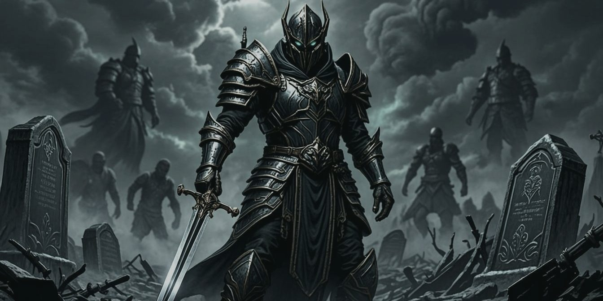

Unholy Death Knight DPS Guide — 12.1.5
Build Your Talents →
Get Discord Webhook →
Download App →
Welcome to our Unholy Death Knight guide for World of Warcraft Patch 12.1.5 (Midnight, Season 2). Here you will learn how to take an Unholy Death Knight into raids and Mythic+ dungeons — from your very first pull to the last percent of optimal DPS. Every deeper chapter of the guide lives on its own page: Talents, Rotation, Gear, Stats, Enchants, Mythic+ and more are all linked throughout.
1.Unholy Death Knight Overview
Unholy Death Knight builds its damage around plagues and a horde of summoned undead. The spec is at its strongest in single-target fights, while its area damage comes from cleaving pets, scaling Epidemic casts and the built-in cleave of Scourge Strike.
The core loop is easy to describe and satisfying to execute: keep your diseases running, raise as many minions as possible, and deal direct damage with abilities that stay effective even from 30 yards away. On top of all that, Unholy is one of the hardest specs to kill in the game — a perk that matters in every piece of PvE content.
The damage profile revolves around a major burst window roughly every 1.5 minutes, backed up by smaller spikes about every 45 seconds. Unholy hits hard from range, but swapping targets takes time: pets have to run over and plagues need to be re-applied. The execute is strong, and the spec loves Bloodlust timings that land while the boss is below 35% health.
In raids, Unholy offers high single-target output, a strong execute and excellent survivability — an easy DPS slot to justify. Death Grip solves very specific encounter problems, but the spec brings no meaningful raid buff, which is the main thing holding it back from an even higher standing.
In dungeons, Unholy pairs solid single-target damage with respectable AoE. What limits the spec in keys is utility: Death Grip and Anti-Magic Zone are welcome but not enough on their own. The flip side is survivability — an Unholy DK that plays well can shrug off mistakes that would kill other DPS, which matters when you are pushing keys at the limit of your gear.
Unholy brings little group utility. You get Death Grip (occasionally fight-defining), Anti-Magic Zone (a valuable magic defensive) and a stop in Blinding Sleet. Outside of Grip being a hard requirement for certain encounters, groups rarely bring an Unholy Death Knight for its utility alone.
Unholy trades blows with Frost Death Knight for the title of most durable DPS spec. Passive defenses such as Will of the Necropolis, Veteran of the Third War, Gloom Ward and Null Magic stack on top of Death Strike, which can heal you back from the brink in the scariest scenarios. It is no surprise that Unholy sits among the DPS specs with the fewest deaths in raid.
Unholy has never been famous for mobility; historically the spec prefers to avoid moving rather than to move quickly. The big exception is Rider of the Apocalypse, whose Death Charge transforms the spec's mobility. With it, Unholy is no longer bottom-tier — somewhere comfortably in the middle of the pack.
2.Unholy Death Knight in Midnight
2.1.Midnight Patch 12.1.5 Content Guides
Patch 12.1.5 introduces no balance changes for Unholy Death Knights, but that does not mean there is nothing new to do. As a mid-season patch it is intentionally light on content — yet there is still a brand-new raid built around the new Kith'ix encounter, and Delves players get the new Labyrinth Mega-Delve to chew through.
2.2.Patch 12.1.5 Changes
Even without class tuning, 12.1.5 matters for your gear. The new Kith'ix raid and the Labyrinth Mega-Delve both serve as fresh gearing sources for Unholy Death Knights, and almost everything the raid drops is worth fighting for. On top of that, Weapons, Trinkets and Necklaces can be upgraded with Ascendant Venomstones once the currency becomes available on October 20th.
2.3.Class Changes
Patch 12.1.5 ships no changes to Unholy Death Knights so far. As a result, our Talent recommendations and rotational priorities carry over unchanged. There are new gear recommendations from the raid and the Labyrinth on the gear page, along with a shortlist of the highest-value items to spend your first Ascendant Venomstones on.
Unholy 12.1 changes. Unholy received a large batch of tuning in Patch 12.1. The most important points:
- Army of the Dead was reworked: it now raises eight Lesser Ghouls up front, and for the next 30 seconds every new ghoul summon instead commands the existing pack to cast Death Order (single target) or Epidemic Order (AoE). Peak minion count drops sharply, but the way the spec plays barely changes.
- Reanimation was renamed Lord of the Dead: when you control three Magus of the Dead, you can sacrifice them to summon a Lord of the Dead for 15 seconds that hurls chaining Frost Bolts — a fun payoff for stacking Magus spawns.
- Soul Reaper now consumes up to three Lesser Ghoul stacks instead of Putrefy stacks. Putrefy returns to being its own ability, and awkward situations (holding Soul Reaper because you do not want to cash your Putrefy charges yet) are gone.
- Dread Plague keeps its remaining duration when it jumps to a new target, which smooths out spreading; plague duration extension was tuned down slightly.
- Blood Beast auto-attack damage was increased by 1,400% — a hilarious number with no real gameplay impact.
- Commander of the Dead no longer extends lesser ghoul duration through Mastery: Dreadblade.
- Blizzard attempted to redistribute damage into a less cooldown-focused profile, but the overall shape stayed largely the same.
The Soul Reaper change is the one that actually reshapes your priority: execute usage is now decoupled from the Putrefy loop.
2.4.Midnight Changes for Unholy Death Knight
Unholy Death Knight was significantly reworked in Midnight. Festering Wounds — a defining mechanic since Legion — are gone, replaced by a minion-summoning gameplay loop at the heart of the spec. Plagues matter more than ever: a new pure single-target disease called Dread Plague joins the kit, and far more talents interact with your diseases. AoE is decoupled from Death and Decay; you instead passively cleave through Scourge Strike. Finally, a new core rotational ability, Putrefy, sums up the fantasy: summon a ghoul, then blow it up.
The familiar bones remain. Festering Strike, Scourge Strike and Death Coil still anchor the rotation — you just press Putrefy every so often as well. The AoE rotation has changed the most and now looks nearly identical to single-target. Pestilence returns as Blightfall, a huge burst button that scales with your plague durations. Overall the rotation is simpler, at the cost of fewer opportunities for skill expression.
2.5.New Apex Talents
Unholy received three new talents in the spec tree that you unlock while leveling from 80 to 90. They are among the most powerful nodes in the tree, significantly buffing Army of the Dead and firing automatic Putrefy casts as your Dread Plague ticks.
2.5.1.Putrefy
Putrefy summons a lesser ghoul that leaps at your target, deals direct damage on arrival and then explodes for AoE damage. A whole cluster of talents builds on this interaction:
- Unholy Devotion makes your permanent ghoul deal more damage for a while whenever you cast Putrefy — multiple applications can overlap.
- Blightburst makes the Putrefy explosion extend your plague durations and instantly deals a portion of the damage those diseases would have dealt. It also applies your plagues to unaffected targets — a big synergy that heavily reduces how many Outbreak casts you need.
- Reanimation reanimates the ghoul you just Putrefied as a Magus of the Dead and increases your Magi's damage — your main source of Magus summons.
- Putrid Echoes grants a second charge of Putrefy and increases its damage. The extra charge adds flexibility: you can space the casts out or dump them back-to-back — for example, summoning two Magus of the Dead during Dark Transformation for a burst of AoE.
- Harbinger of Doom reduces Putrefy's cooldown whenever Scourge Strike summons a ghoul.
- Soul Reaper automatically consumes and uses all your Putrefy stacks, removing the need to cast Putrefy during the execute window.
- Blightfall grants a charge of Putrefy when used.
Because nearly every part of the kit touches Putrefy, learning when to spend its charges is a big part of playing the spec well.
2.5.2.Festering Wound Removal
Festering Wounds are completely gone. Instead of applying a debuff to enemies, Festering Strike now stacks a buff on your lesser ghoul (2–3 stacks per cast, up to 8). Scourge Strike consumes those stacks to summon a lesser ghoul. Because the stacks live on you rather than on the enemy, target swapping and setup feel far smoother — and the spec leans fully into the necromancer fantasy of raising a small army. Two iconic cooldowns, Unholy Assault and Apocalypse, were removed along with the wounds.
2.5.3.Plagues
Midnight introduces Dread Plague, applied via Outbreak or via Putrefy with Blightburst. It damages a single enemy (talented into a second, weaker target with Superstrain) and is your new source of Sudden Doom procs. When its target dies, the plague detonates and jumps to a new enemy — which keeps it alive in AoE and occasionally sets off delightful chain reactions where packs die one after another.
The tree is full of plague interactions: Death Coil and Epidemic now extend Virulent Plague and Dread Plague by default; Scourge Strike deals bonus damage per plague on the target; Festering Scythe increases plague tick rate; and Blightburst extends durations while dealing damage based on your plague damage. The star is Blightfall: when you press Dark Transformation, your next Outbreak becomes Blightfall, consuming your plagues for 100% of their remaining damage in one burst. The loop — transform, inflate your plague durations, then consume them for a massive hit — is the signature play pattern of the rework, and San'layn executes it best thanks to Infliction of Sorrow extending plague durations.
2.5.4.AoE Rework
Clawing Shadows was reworked: it no longer grants range (Scourge Strike hits from 30 yards by default) and instead becomes your AoE enabler — every Scourge Strike cleaves to one additional target, up to 4 extra targets (6 with Scourging), with no Death and Decay required. Tanks can drag bosses out of ground effects all they like; you just follow and keep hitting. The trade-off is a ramping AoE profile: cleave stacks last only 12 seconds, so you want to chain-pull to keep them alive. San'layn ignores this entirely, reaching max stacks instantly through the Inevitable talent.
The new Outnumber talent grants your lesser ghouls the Claw AoE ability during Dark Transformation, making Army of the Dead a stronger AoE cooldown and giving Rune of the Apocalypse extra AoE value. Meanwhile, Death and Decay is in a strange spot: it deals okay damage only in very large pulls, retains some San'layn synergy (Desecrate, Blood-Soaked Ground) and can be auto-cast by Scythe of Decay when you use Festering Scythe — but as a button it is simply not worth pressing anymore. Its main remaining value is utility via Grip of the Dead.
2.5.5.Ranged Effectiveness
Unholy is far more effective at range in Midnight. Scourge Strike hits from 30 yards by default, Sudden Doom procs from Dread Plague hits rather than melee swings, and Unholy Aura works off your minion summons. In practice you step into melee to land Festering Strike, then spend the next several seconds attacking from range while losing minimal damage. You do lose melee swings (roughly 2% of your damage) and your pets have slightly longer to travel when summoned — otherwise, you can legitimately pretend to be a ranged DPS for large stretches of any fight.
2.6.Hero Talents
Both hero trees — Rider of the Apocalypse and San'layn — received three new talents each. None of them move the needle much; they mostly echo effects we have previously seen from tier set bonuses. For the full hero-by-hero breakdown, see the Talents page.
2.7.Class Tree Changes
The Death Knight class tree saw smaller adjustments. Blood Bond, Death Defiance and Death Notes were added — nice defensives, plus a hook that finally makes Death Pact worth considering. Soul Reaper moved into the spec tree and was reworked to buff your minions and plagues, while Sacrificial Pact was removed entirely. Several nodes moved around: Death's Reach now sits in a much better spot as a choice node with Asphyxiate, Wraith Walk moved up the tree as a choice with March of Darkness, and Unholy Momentum became a 2-point talent. On the downside, Death Strike and Unholy Endurance were nerfed slightly — a small dent in the spec's legendary durability, nothing more.
3.Basics of Unholy Death Knight Gameplay
Unholy Death Knight is a resource-management spec: your damage comes from spending Runes and Runic Power at the right moments, keeping your diseases ticking, and aligning your cooldowns into burst windows. Master the three habits below and the rest of the guide follows naturally.
- Maintain your buffsChain Festering Strike into Festering Scythe to keep the Scythe buff alive, and never press Scourge Strike with zero Lesser Ghoul stacks — build with Festering Strike, spend with Scourge Strike.
- Manage your resourcesRunes and Runic Power are your two resources, and starving on either is lost DPS. Prioritise spending Runes (always keep about three recharging) and never let Runic Power sit at its cap.
- Keep your plagues rollingYour diseases — Dread Plague above all — are a major source of damage both directly and through talent synergy. Letting them fall off is the single most common beginner mistake.
4.How to Gear Up as a Unholy Death Knight
Simming your own character always beats any static list, but we still maintain a dedicated Unholy gearing page with our current Season Two recommendations, so you can step into endgame Midnight content on the right foot. Once the gear is in place, round it out with the right consumables, gems and enchants to make every item count.
5.Changelog
- 12 Oct 2026Guide and all sub-pages (Leveling, Gear, Addons, Enchants, Stats, Mythic+, Rotation, Talents, Spells, Easy Mode) reviewed and updated for Patch 12.1.5.
- 05 Oct 2026Performance ratings adjusted after the Blightfall nerf.
- 30 Sep 2026Performance ratings adjusted after the Blightfall bugfix.
- 25 Sep 2026Rotation: default talent selections updated to include Soul Reaper.
- 23 Sep 2026Rotation default hero switched to San'layn; Talents: recommended single-target raid build moved to San'layn; builds updated around Blightfall.
- 08 Sep 2026Batch review for Patch 12.1: Festering Strike stack-count update on the Leveling page, macro description order fixed on the Addons page, removed Commander of the Dead mastery interactions from Stats and Spells, Mythic+ reviewed, rotation priority updated for hotfixes, Easy Mode rotation updated for the new Epidemic/Graveyard target counts.
- 07 Sep 2026Gear page reviewed and updated after hotfixes.
- 04 Sep 2026Mythic+ recommended build switched to San'layn Minion; Talents: single-target raid build moved to Rider; Easy Mode beginner raid build moved to Rider.
This page is an English reference build for wowfarsi.ir, mirroring the structure and section model of the Icy Veins Unholy Death Knight guide (Patch 12.1.5). World of Warcraft and related names are trademarks of Blizzard Entertainment.